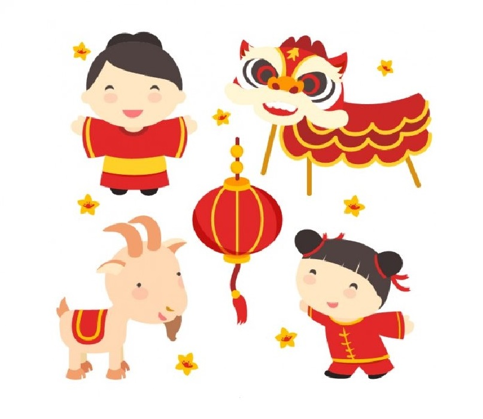
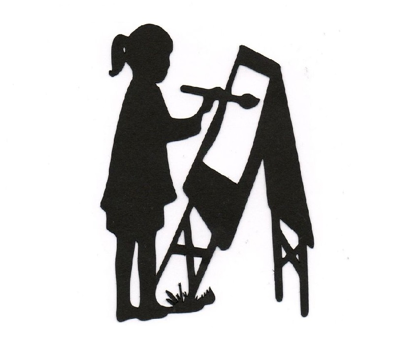

Listening and Speaking
Activities and stories are explained in both Chinese and English so kids get the firsthand experience of hearing the Mandarin language.

Culture
Throughout the year, kids will learn about the culture of China. They will create crafts for traditional Chinese holidays, hear folk stories that have been passed down for years, and be able to practice lion dancing and singing.

Hands on Activities
Learning is best facilitated with hands on activities. Kids will learn songs, create their own posters and origami, and play games with other kids to reinforce the information they learned that day.